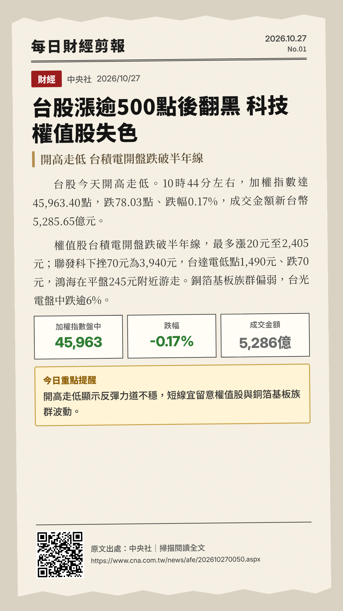
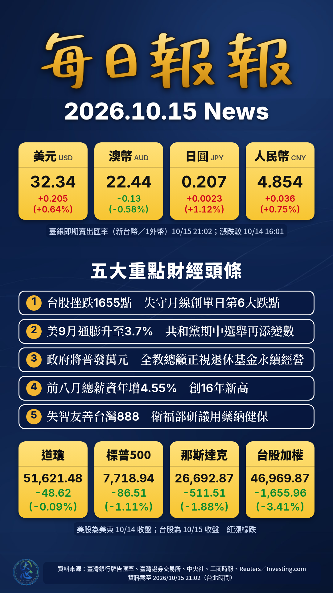

2026.10.15（四）
財經・保險・理財
南恩新聞報報
A1
要聞
2026.10.15
字體
預設配置
思源黑體
思源宋體
微軟正黑體
Windows 限定
五大重點財經頭條
1
台股挫跌1655點 失守月線創單日第6大跌點
中央社｜2026/10/15 13:53
2
美9月通膨升至3.7% 共和黨期中選舉再添變數
中央社｜2026/10/15 10:02
3
政府將普發萬元 全教總籲正視退休基金永續經營
中央社｜2026/10/15 11:19
4
股市大跌景氣差？今年前八月總薪資年增4.55％ 創16年新高
工商時報｜2026/10/15 20:20
5
拚2035年達「失智友善台灣888」 衛福部研議用藥納健保
中央社｜2026/10/15 16:24
匯率
臺銀即期賣出・新台幣／1外幣
美元
USD
32.34
▲ +0.205（+0.64%）
澳幣
AUD
22.44
▼ -0.13（-0.58%）
日圓
JPY
0.207
▲ +0.0023（+1.12%）
人民幣
CNY
4.854
▲ +0.036（+0.75%）
2026/10/15 21:02 掛牌；漲跌較 10/14 16:01 末次掛牌。紅漲綠跌。
重要指數
道瓊
51,621.48
▼ -48.62（-0.09%）
標普500
7,718.94
▼ -86.51（-1.11%）
那斯達克
26,692.87
▼ -511.51（-1.88%）
台股加權
46,969.87
▼ -1,655.96（-3.41%）
美股為美東 10/14 收盤；台股為 10/15 收盤。紅漲綠跌。
今日新聞剪報
點新聞、左右箭頭或滑動切換
全部
財經
保險理財
健康醫療

‹
›
下載圖片
可在手機上長按圖片另存。
今日海報
五大重點頭條
經典深藍
深藍K線
金色地球
新聞棚
自選頭條
想自訂標題、標題字體、顏色或背景？請點上方「自選頭條」。

下載圖片
海報標題
還原每日報報
標題字體
預設（每日報報＝金色字圖）
思源黑體 Heavy
思源黑體 Bold
思源黑體 Medium
思源宋體 SemiBold
思源宋體 Regular
Inter
勾選 5 則頭條（預設為今日五大重點），用 ▲▼ 調整順序，再按「產生海報」。
背景（預設「自動」＝今日依新聞類別自動挑選）：
重設為自動
產生海報
全部下載（ZIP，海報＋全部剪報）